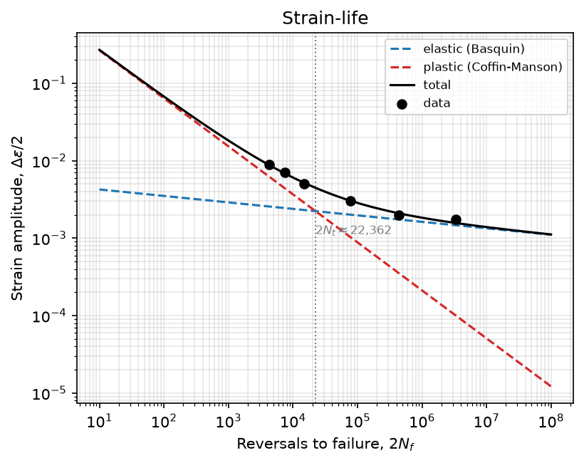
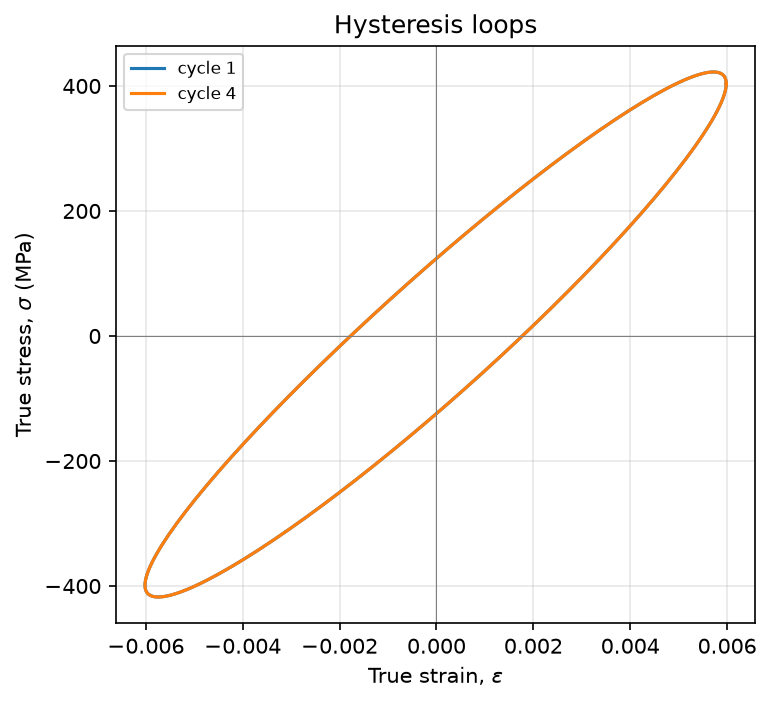

Run a full fatigue analysis by describing what you want.
lcf-strain-life connects to any AI assistant that supports the Model Context Protocol and turns your own strain-controlled test data into standardized results, fitted models, life predictions, and plots. No coding required.
Python 3.11+ · MIT license · works with the lab exports you already have
- Coffin-Manson ε'f
- 1.11
- Coffin-Manson c
- -0.62
- Basquin σ'f
- 1073 MPa
- Basquin b
- -0.084
- Transition life
- ~22,000 rev.

Illustration of a typical exchange. The numbers and plot are the real SAE 1137 example from the repository.
The analysis is standard. Getting there is the slow part.
Plenty of fatigue software exists. What did not exist is a toolkit an AI assistant can drive from start to finish. You have the test data. Turning it into standardized, reproducible results is the manual, error-prone part, often locked inside one-off scripts and spreadsheets. lcf-strain-life lets you describe the analysis in plain language and get results you can reproduce, with the published source cited for every method it uses.
From raw signal to life prediction, all reachable in plain language.
Read your test data
Turn a raw strain, force, and time signal into per-cycle metrics and a half-life summary. Reads the delimited exports labs actually produce, including MTS and Instron style files.
Fit the standard models
Coffin-Manson, Basquin, and Ramberg-Osgood, with the transition life and a Masing consistency check on the fit.
Predict life
Cycles to failure for a given strain amplitude, with Morrow, SWT, or Walker mean-stress corrections.
Variable amplitude
Rainflow, level-crossing, and peak counting to ASTM E1049, plus spectrum life and a local-strain engine with material memory.
No fatigue data yet?
Five published methods estimate the strain-life constants from monotonic properties or hardness. These are screening estimates, and they are labeled as such.
Statistics and design curves
Design curves with reliability and confidence, outlier screening, Dixon-Mood staircase, and A- and B-basis values.
Notch and multiaxial
Neuber and Glinka local strain, and a critical-plane search with Fatemi-Socie, Brown-Miller, and SWT parameters.
High temperature
Frequency-modified Coffin-Manson and time-fraction creep-fatigue with a D-diagram check.
Every method cites its published source. All analysis uses true stress and true strain. Results are saved and can be recalled later without recomputing. See the full tool list →
Ask for a fit. Get constants, a life estimate, and a plot.
Give the assistant a series of strain-controlled tests, here the SAE 1137 example from the repository, and ask for the fit. It reduces each test, fits the constants across the series, and returns a plot you can save. Behind the plain-language request are the same standardized equations you would run by hand, with every method traceable to its source.
The variable-amplitude life engine is validated against published SAE datasets. On those histories it landed within about two to three times of experiment and leaned non-conservative. Treat its numbers as an engineering estimate and verify against your own data.

Material-agnostic by design. It serves many materials and many fatigue workflows across research and engineering, not one alloy family and not one industry.
Before you start
Do I need to know how to code?
No. You talk to your AI assistant in plain language, and it calls the analysis for you. A Python library is available for those who want to script it, but it is optional.
Which AI assistants work?
Any assistant that supports the Model Context Protocol, for example Claude Desktop, Cursor, VS Code in Copilot agent mode, or Google Antigravity. The setup guide shows the one command to run and where to add it. It is not tied to a single product.
Does my data leave my machine?
The toolkit installs and runs on your own computer, and all computation happens locally. Your assistant only sees what you choose to share with it in the conversation.
Is it free?
Yes. It is open source under the MIT license, and the source is on GitHub.
How do I cite it?
Use the DOI 10.5281/zenodo.21222820, or the CITATION.cff file in the repository.
Try it on your own fatigue data.
A one-time setup of about five minutes, then it is there every time you open your assistant.